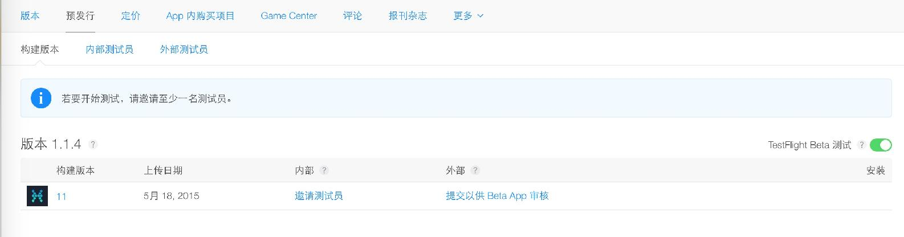
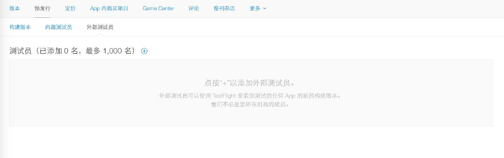

现在你已经了解了营销的基本方法和思路，那么你可以先找一个小群体测试自己的点子。无论是积极的反馈还是令人沮丧的反馈，都可以帮助你进一步改进产品。
App 发布之前内测是必须的，一般人可能以为自己拿几个手机测试一下还不就得了？？但是事实远不是这样，由于你对自己的 App 的行为非常捻熟，而且使用场景有限，设备有限，导致的结果就是——温室里的花朵测不出 Bug。
在用户中也存在一种人，总是能在你以为完美的版本里，找出重大的 Bug。
内测不仅能够除掉 Bug，也是唤起早期用户参与感的重要方式。
曾经一度是最好的第三方测试平台，现在已经被 Apple 收购了。 当你提交了到 iTunes Connect 后，可以在 预发行 这里开启 TestFlight

开启之后需要再点击 提交以供 Beta App 测试 填写基本的 App 资料，然后等待 1-2 天就可以向外部测试员发布。
点击外部测试人员来添加人员

内部测试人员无需经过 Apple 的审核，但是也有着诸多限制条件，一个 Apple ID 只能参与同一个开发者发起的内部测试，而且可以登录你的 iTunes Connect 后台，存在一定的安全隐患。
通过审核之后你就可以到 MindStore 或者 NEXT 这样的社区寻找内测人员了。
内测的方式也极为重要，发起话题，积极互动，并且最好附上截图。
下面是 小记 内测时的内容形式：
然而仅仅发布到这些平台上还是不够的，找到你熟悉的有影响力的人帮你在社交网络上转发，如果你的作品足够独特，必然会有更多的人参与进来。